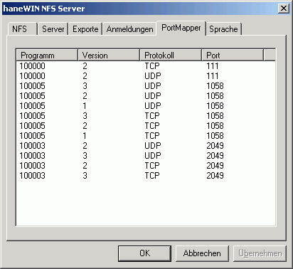

|
Overview Installation Implementation Users Guide Client Support |
haneWIN NFS Server
|
Updated: Dec 2015 |
Overview
This software implements a NFS Server based on RFC 1813 (NFS 3 Protocol), RFC 1094 (NFS 2 Protocol) and RFC 2055 (WebNFS Protocol). A SunRPC PortMap Daemon is implemented as a separate service to allow the use of the NFS server also with other PortMap implementations.
NFS server and PortMap daemon are implemented as Windows XP/VISTA/20xx/7/8/10 services for background operation.
A Control Panel applet is implemented for configuring and controlling the operation of the NFS Server.The NFS Server can also be started as an application with optionally built-in PortMap daemon.
The software is implemented as 32- and 64 Bit versions.
Installation
- Requirements
Computer with Windows XP/VISTA/20xx/7/8/10. The NFS Server as application can also be used on Windows 9x/ME
- Installation of the NFS server on Windows XP/VISTA/20xx/7/8/10
- Install the software by running the setup.
- Enable PortMap Daemon and NFS server in firewall for incoing requests. An example is given in file firewall.bat
- With the control panel applet NFS Server you can configure and monitor the service. Administrator rights are required to change setting from the applet.
- Create an exports file with the directories you want to access from NFS clients. (The format of the exports file is the same as on Unix. Details are specified below.)
- Use Install NFS Server service from the start menu to install and start the server
- Installation of the NFS server on Windows 9x/ME
- Install the software by running the setup.
- Use NFS Server from the start menu to start the server.
- Create an exports file with the directories you want to access from NFS clients. (The format of the exports file is the same as on Unix. Details are specified below.)
- Restart the NFS Server to activate the new exports configuration.
Implementation
The reason for this implementation was not to set up yet another way of networking for Windows computers, but to give Unix systems with basic networking capabilities an easy way to access volumes connected to a Windows computer, providing disc space, CD/DVD access and data sharing for Unix systems.
Because the server supports hard links, soft links and special devices, it can be used to run diskless unix clients completly from a Windows volume.The exports file uses the same format as on Unix. Directories must follow the Windows notation starting with a drive specification, e.g. C:\unix
The following options are supported:
-name:<sharename> assigns a name to the exported path as an alternate name for mounting. -alldirs allows the host(s) to mount at any point within the filesystem. -umask:<mask> set the umask for group and world permissions on the filesystem, default 022 -readonly limits access to reading -public Enables WebNFS access. -lowercase maps all file names to lowercase, otherwise case is preserved. -exec forces in access rights the x bit for all files. -mapall:<uid>[:<gid>] all Unix user-ids and group-ids are mapped to the specified user-id and group-id. -maproot:<uid>[:<gid>] the Unix super user root is mapped to the specified user-id, group-id. Without a mapping entry root will be mapped to user and group nobody. -range IP adresses are interpreted in pairs as from-to ranges enabling client access from all addresses in a range (more flexible than the unix -net -mask options). To export a directory name containing spaces put the path name in quotes.
e.g. c:"\my files" ...A directory can be specified more than once for different clients.
On the client side use standard Unix notation for mounting drives and directories:
C: --> /c
D:\nfs --> /d/nfs
e.g.: Directory D:\nfs is mounted on /mnt/nfs.
mount -t nfs 192.168.1.4:/d/nfs /mnt/nfsFor mounting Windows remote network shares enable the "Allow mount of remote devices" option on ther server tab and use the following notation:
\\server\share --> //server/share
e.g.: Directory \\amilo\nfs is mounted on /mnt/nfs.
mount -t nfs 192.168.1.4://amilo/nfs /mnt/nfsWith the -name option a share name can be assigned to an exported Windows path:
e.g..: Windows path D:\OwnFiles\music\mp3 is exported with option -name:mp3.
It is mounted under Unix with the command
mount -t nfs 192.168.1.4:/mp3 ...
The real Windows path is invisible for the Unix user.The unix user is returned as the owner of the Windows files. Owner access rights are set based on the Windows permission bits readonly and hidden. The Windows file system hidden attribute is used by the NFS server to mark unix files as executable. For unix group and world access rights a default mask of 022 is applied to the owner access rights. The mask is configurable per filesystem using the -umask exports option.
Special files and properties, like Unix soft links and the SUID bit are marked by the system attribute. Unix hard links are supported on 200x/XP/Vista/7 NTFS volumes. For non NTFS volumes and elder Windows releases a hard link can be emulated by creating a copy of the file.
NFS requires the Unix inodes for indexing files on a file system. The NFS server creates its own inode table in a file called inodes.nfs (created in the NFS server software directory or in the directory specified by registry key InodePath). Because inodes must be created for all files accessed via NFS, depending on the volumes and files on the server the file can grow to some MBytes in size.The NFS Server operates multithreaded. For TCP connections a thread is created per client. For UDP the configured number of threads is created to handle concurrent access from clients.
Linux clients create a temporary file with no access bits set and try to write to the file. Because with fails on Windows you can force the server to use the default access in this case. The behaviour was not observed for NetBSD/FreeBSD clients.
For UDP connected clients the server can be restarted without remounting at the client. Unmodified entries in the exports list are also still valid without remount after restarting the server.
Users Guide
The Info Box at startup of the Control Panel is displayed only for the unregistered version.
Running the NFS server on Windows 9x/ME
To use the software as application on Windows 9x/ME run
Use the tray icon menu to configure or terminate the NFS Server.
nfssrv.exeRunning the NFS server as a Service on Windows XP/VISTA/20xx/7/8/10
PortMap Daemon and NFS Server are implemented as services for background operation. The entries created in the start menu execute the following commands.
- The PortMap Daemon is installed and started by the command:
PMAPD -install
The service can be started and stopped manually by the service control panel.- The NFS Server service is installed and started by the command:
NFSD -install PMAPDaemon
The service depends on the service PMAPDaemon. If you use a Portmapper from another vendor use their service name for the portmapper. If no service name is specifed no dependency check is applied.
The service can be started and stopped manually by the service control panel.- Run
PMAPD -remove
or
NFSD -remove
to stop and remove the PortMap daemon or NFS server service.The NFS Server control panel
- Register
- About...
- displays program version information.
- Help
- starts a HTML browser displaying the manual.
Server optional Server configuration
Exports lists exported folders and allows editing of the exports table. Exported folders are stored in unix style exports file.
Portmapper displays RPC programs registered with the SunRPC PortMap daemon. 
Support
The latest version is available on www.hanewin.net. Please mail comments, questions, problems to mail@hanewin.net.